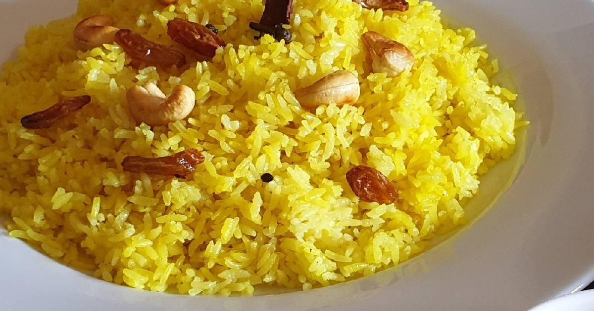

Basanti Polao

Description:
Basanti polao or mishti polao is a sweet, ghee-laden rice dish made from fragrant gobindabhog
or kalijeera rice, cashew nuts and raisins. This is the main rice dish of choice for any special occasion.
Ingredients:
- 500 g aged gobindobhog rice
- 100 g bengali-style ghee
- 6 g ginger (finely chopped)
- ½ tsp turmeric
- 8 pcs cardamom
- 3 pcs cinnamon
- 8 pcs cloves
- 3 pcs bay leaves
- 20 g salt
- 70 g sugar
- 35 g cashew nuts
- 35 g raisins
- 6 pcs green chillies
- 1050 g hot water
Steps:
- Wash and rinse rice, and leave it to air-dry over a strainer.
- Once dry, transfer it to a mixing bowl. Add to it finely chopped ginger, turmeric, cardamom, cinnamon, cloves, bay leaves, and Bengali-style ghee. Mix until rice grains are well coated with ghee and spices. Cover and rest for about an hour.
- Before you start cooking, set water to boil in a pot or in an electric kettle.
- Heat 5 g ghee in a kadai. Add the cashews and fry them until they are lightly coloured (about a minute). Now add the marinated rice. Fry it for about 6 minutes on medium until the rice takes on an opaque appearance. Add the raisins and fry for another 2 minutes.
- Add about 1050 g (±5%) hot water, along with the salt. The amount of water is important. Add too much and polao will become soggy, add too little and it may stick to the pan.
- Cover and cook on lowest possible heat for about 10 minutes.
- Add sugar and slit green chillies. Gently fold them into the rice, taking care to ensure that you don't break the grains of rice too much.
- Put the lid back on and steam for another 5 mins to let the sugar dissolve and any remaining moisture get absorbed into the rice. Turn off the heat and let it rest for some time before serving.
Go Back To Home Page